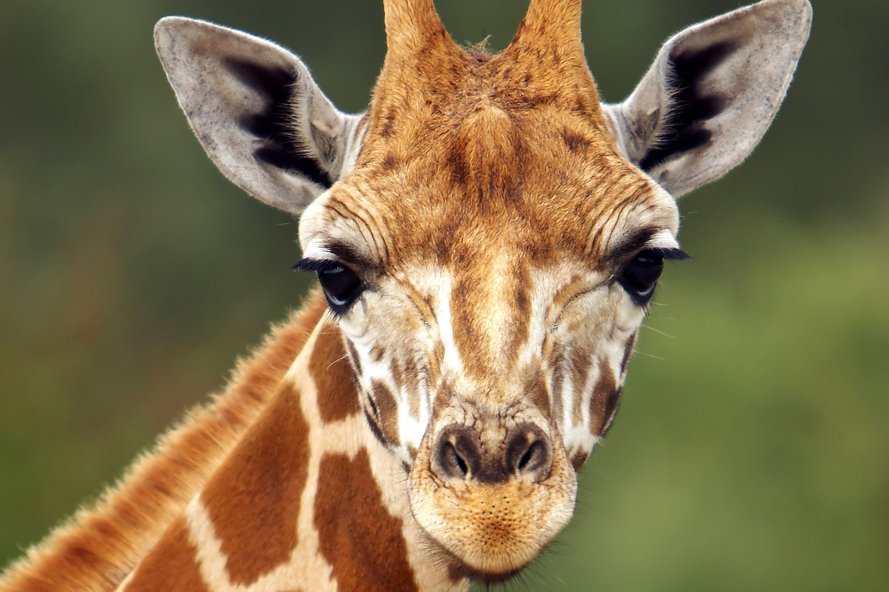
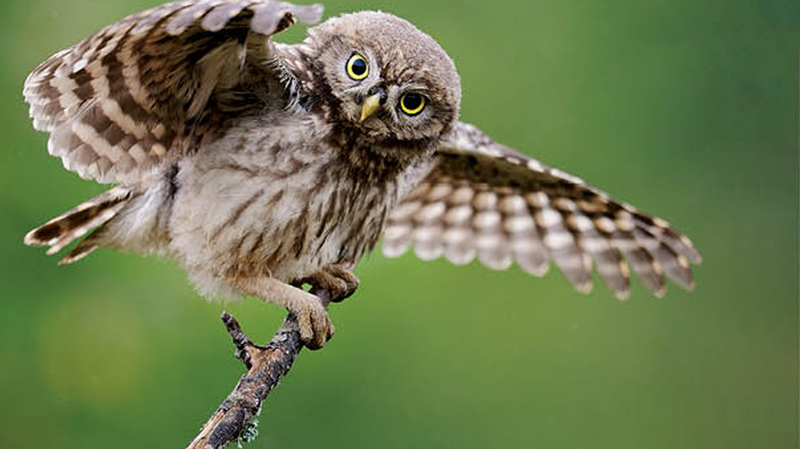
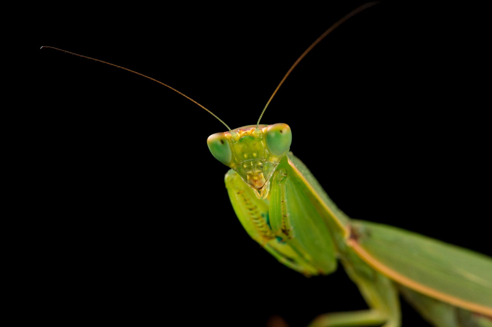
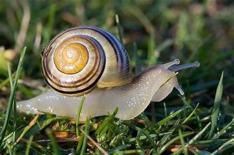

A zoo, also known as a zoological park or zoological garden, is a place where animals are confined within enclosures for the public to view. Many zoos also breed the animals. There are currently over 1,000 large animal collections open to the public – 80% of them in major cities. The name comes from zoology, the study of animals. Keep reading for more information and facts about zoos or download the entire worksheet pack which includes 11 fun activities to test your knowledge on Zoo’s and their animals.
Vertebrates
Fun Facts about Vertebrates The only mammals that lay eggs are monotremes such as the platypus and spiny anteater. There are reptiles that live on every continent except Antarctica. Most fish have skeletons made of bone, they are called bony fish.What are vertebrates? Vertebrates are animals that have a backbone or spinal column, also called vertebrae. These animals include fish, birds, mammals, amphibians, and reptiles. How are they classified? Vertebrates are classified by the chordate subphylum vertebrata. Invertebrates are any other animal that is classified outside of that class. Are there a lot of vertebrate species? There are currently around 65,000 known species of vertebrate animals. This sounds like a lot, but vertebrates are only around 3% of all the animals on Earth. Most of the animal species are invertebrates.Additional Facts. Invertebrates are ectotherms (cold-blooded): they warm their bodies by absorbing heat from their surroundings. Most invertebrates live in water or spend at least some part of their life in water. Some groups of invertebrates live on land. Common examples include worms, insects and spiders.


Invertebrates
Marine Invertebrates - There are a wide variety of interesting ocean animals that are invertebrates. These include sponges, corals, jellyfish, anemones, and starfish. Mollusks - Mollusks have a soft body that is covered by an outer layer called a mantle. Many mollusks live inside a shell, but not all of them.[1]
An invertebrate is a species of animal which does not have a back bone, such as a spider, insects, lobsters and crabs. Below is some additional information and a selection of external resources on invertebrates. It is estimated that as much as 97% of all animal species are invertebrates.[2]
How are they classified? Invertebrates are any other animal that is classified outside of that class. Vertebrates are classified by the chordate subphylum vertebrata. These animals include fish, birds, mammals, amphibians, and reptiles. Vertebrates are animals that have a backbone or spinal column, also called vertebrae.[3]

